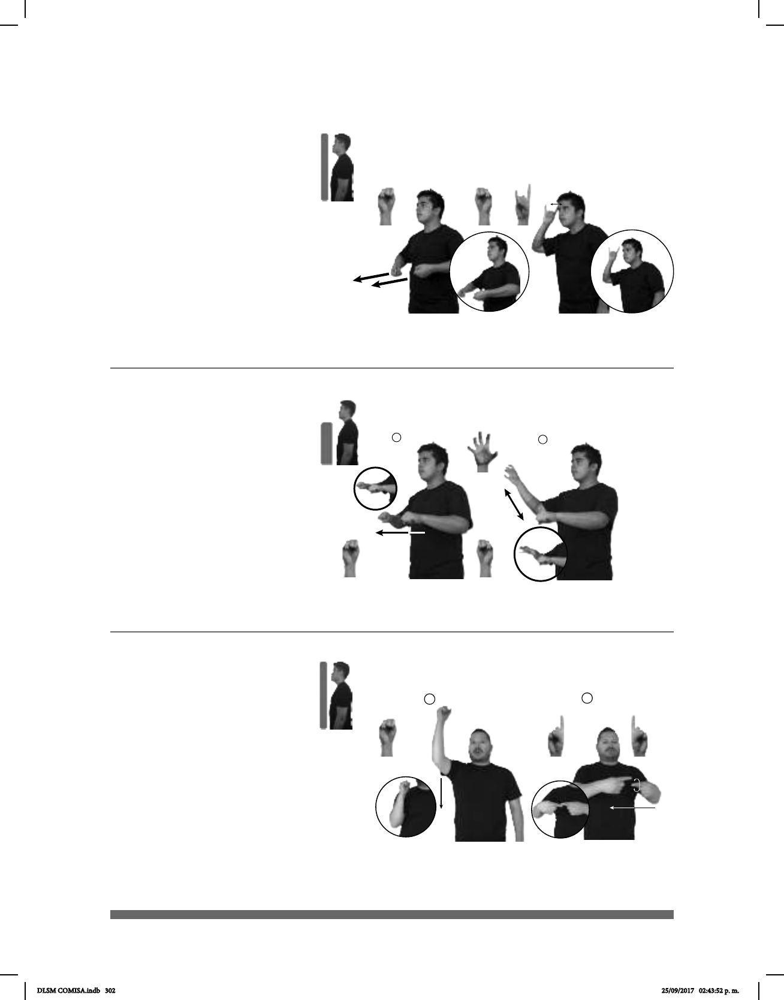

302
1
2
Seña: SC: I. SM; II. SB
I. Palma hacia la izquierda; II. MD
y MB palmas hacia dentro.
I. De la cabeza al hombro; II. MD y
MB a la altura del pecho de derecha a izquierda.
I. Recto; II. MD y MB siguen una
trayectoria de movimientos circulares.
II. Labios soplando.
Simula a una persona jugando
en una máquina tragamonedas.
sust. m. Establecimiento
acondicionado especialmente para la práctica
de juegos de azar en los que se apuesta dinero y
donde generalmente se consumen bebidas
alcohólicas; en ocasiones se presentan e
spectáculos de baile o música.
(S-27)
TODOS-SÁBADOS pos-MI AMIGO+MUJER pos-SUYO NOVIO CASINO IR
Mi amiga y su novio van los sábados al casino.
1
2
Seña: SC: I. SS; II. SB
I. S.1; II. MD S.1, MB 5.12,
MB S.1
I. Palmas hacia abajo; II. MD la
palma inicia hacia afuera y termina hacia abajo.
MB palma hacia abajo.
I. A la altura del abdomen; II. MD
a la altura de la cabeza. MB a la altura del
abdomen.
I. Recto hacia el frente; II. MD
recto de arriba hacia abajo repetidamente.
Simula la acción de empujar el
carrito de supermercado y colocar objetos
dentro de él.
sust. m. Vehículo pequeño de
cuatro ruedas que se emplea para transportar
productos en un supermercado.
(S-26)
CARRITO-DE-SUPERMERCADO MUCHO COSA COLECCIONAR
Trae el carrito para echar las cosas.
Seña: SC: I. SS; II. SM
I. S.1; II.
I. Palmas hacia el
centro; II. Palma oblicua hacia la
izquierda y hacia afuera.
I. A la altura del
abdomen; II.Sobre la sien.
I. Recto hacia el
frente; II. Recto hacia la derecha.
sust. f. Pequeño
carro de dos ruedas provisto de una
plataforma, que se emplea para
transportar objetos pesados.
(S-25)
CARRETILLA-DE-CARGA COSTALES LLEVAR
Lleva los costales en la carretilla.
DLSM COMISA.indb 302 25/09/2017 02:43:52 p. m.